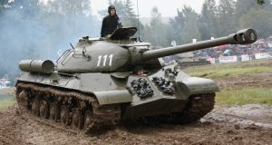
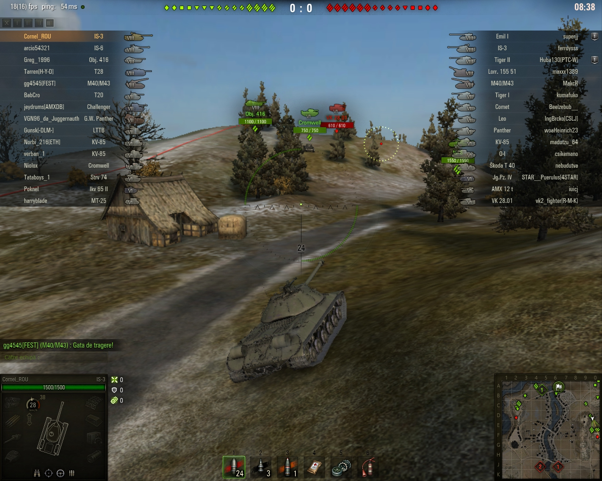
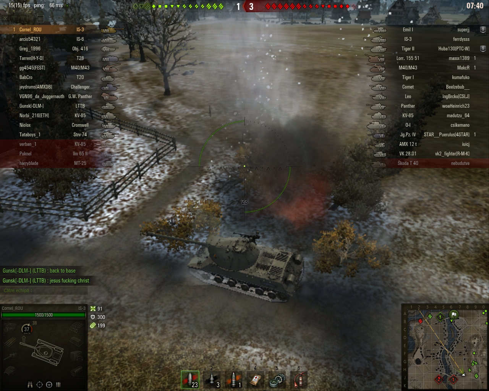
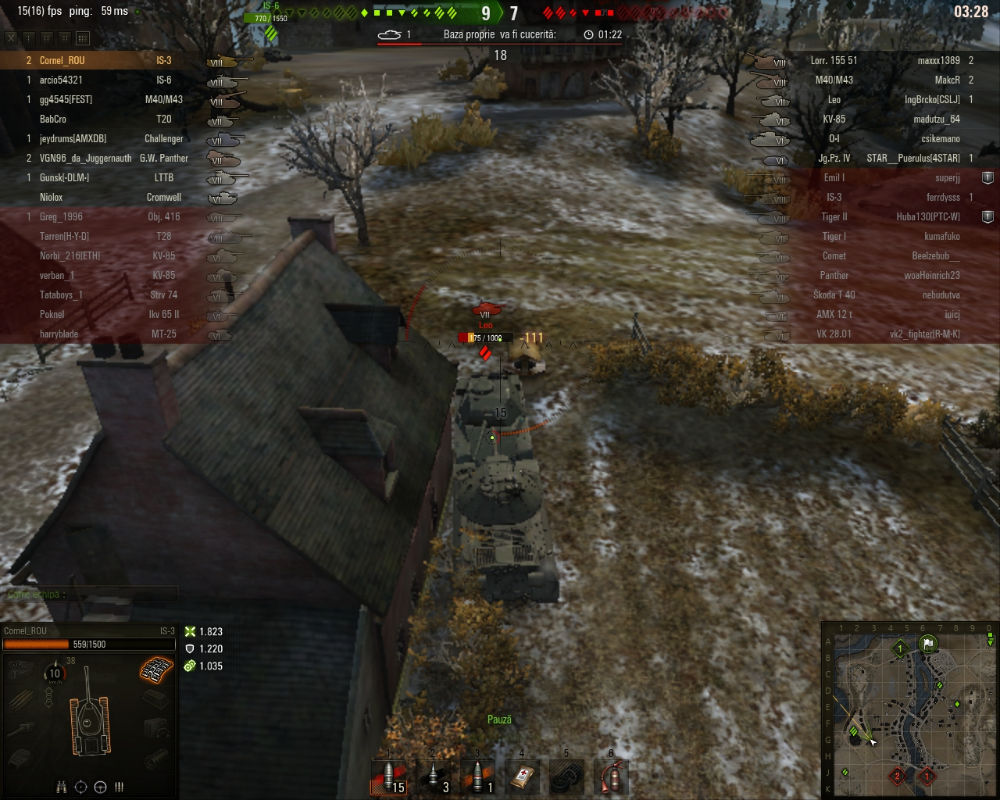

IS-3 (VIII, Heavy, URSS) bijuteria din garaj

Poate că putini sunt cei care îşi permit să deţină (rând pe rând) TOATE tancurile din WoT, dar aş putea spune că în acest joc sunt, totuşi, câteva tancuri pe care orice jucător ar trebui să le aibă în garaj! Unul dintre acestea este tancul greu sovietic de tier VIII, IS-3!
Pe la începuturile mele în WoT, când luptam pe la tier 3-4-5 cu tancurile standard, mi-am cumpărat un premium de tier 8 (Panther 8,8) ca să pot juca în lupte de echipă. Ei bine, acolo şi atunci am văzut cum toată lumea te întreabă â€ai IS-3?â€. În luptele de echipă (de tier VIII), poţi să intri şi cu O-Ho, cu Tiger II, cu TD-uri, cu orice altceva, mereu vei fi întrebat: â€da’ IS-3 nu ai?”…
De ce atitudinea asta? Pur şi simplu pentru că IS-3 este un tanc excepţional în acest joc (pentru tier 8)! Foarte bine blindat (turelă 249/172/100 mm, corp 110/90/60 mm), cu â€forme†care deviază mereu proiectilele inamice, tun perfect, BL-9 (122 mm), care penetrează cu muniţie normală 225 mm şi dă damage mediu de 390/lovitură, uşor de manevrat, IS-3 este întotdeauna un pericol pe câmpul de luptă chiar şi în bătălii de tier 10!

Plăcerea de a juca în WoT cu acest tanc rămâne chiar şi după ce l-ai cumpărat pe următorul (T-10, de tier IX). Dacă eşti un jucător adevărat de WoT te vei întoarce mereu la IS-3! 🙂 Şi nu doar pentru luptele de Echipă…
Aşa am făcut şi eu acum pentru a vă putea prezenta bijuteria WoT-ului! Am scos IS-3-ul din garaj şi l-am aruncat pe câmpul de bătălie! Luptă de tier 8, pe harta Erlenberg, eu în apărare…

4-6 la tancuri grele… La tier 8 contează încă foarte mult raportul tancurilor grele. La tier 10 chiar şi cel mai â€amărât†tanc mediu penetrează aproape toate concurentele de tier maxim, dar la VIII încă se simte diferenţa.
De acolo, din susul hărţii, mă decid s-o iau pe stânga şi să dau iama printre inamici alături de colegii care vin şi ei pe acolo. Nu voi juca în aşteptare, dacă tot am IS-3, nu-i aşa? 🙂
Un V.K. 28 inamic ne spotează. Sunt două artilerii în joc, nu e de stat pe loc. Deci, înainte, ca ruşii! 🙂
Un Leo apare departe în faţa mea şi-mi dă una blocată de blindaj, de 300 damage. La IS-3 mai greu cu penetrarea frontală! Un coleg se panichează când vede grupul nostru de tancuri avansând… “Unde mergeţi?†întreabă el… 🙂

Nici nu-l bag în seamă (pe Leo) şi continui să avansez până ajung la bazele lor. Acolo descopăr o Skoda T 40 care stă în apărare, în timp ce Leo curajosul fuge mâncând pământul!
Colegii au lovit Skoda, i-au redus viaţa, iar eu l-am distrus frumos, cu o ultimă lovitură.
Avansez iar… Am cinci colegi în spate care mă lasă în faţă. Un proiectil de artilerie explodează lângă mine… Alţi colegi strigă după noi să ne întoarcem la bază! Măi, oameni buni, suntem grup de 5-6 tancuri care avansăm. ORICE tanc descoperit va fi distrus imediat, nu e clar? Înţeleg, dacă eram 1-2, însemna sinucidere şi n-avea rost, dar aşa? Las’ că vedeţi voi ce înseamnă un IS-3 nervos! 🙂
În apropiere de podul de la baza inamică descopăr VK-ul care ne spotase anterior! O ia la fugă săracul, dar eu mă concentrez pe direcţia lui de înaintare, trag â€la întâlnire†şi-l lovesc în plin: 440 damage…

Primesc o lovitură de artilerie în turelă care îmi avariază tunul, dar fără nici un damage. Repar tunul… Am scăpat uşor!
Blochez de la Leo înca o lovitura de 300 damage… Ăsta nu înţelege că nu poate penetra un IS-3?
Trec podul dintre cele două baze inamice…
Înaintez şi blochez o nouă lovitură de la un Tiger II (320 damage!). Ca să nu ziceţi că doar Leo trage aiurea în bijuteria mea de tanc! 🙂
Un Panther reuşeşte pentru prima oară o penetrare, 131 damage. Panther-ul are tun cu penetrare bună, dar dă damage puţin/lovitură. Nu e de speriat!
Mă aşez, totuşi, după o casă din apropiere şi mă pregătesc să lovesc un Tiger care îmi apare în faţă. Scorul e 1-4, iar colegii din aparare sunt tot panicaţi. Inamicii au patruns până aproape de baza noastră. Acum, atacul meu şi al colegilor care au avansat ar trebui să întoarcă rezultatul!

Trag în Tiger, dar proiectilul ricoşează din blindaj… Cine spunea că Tiger are blindaj slab???
Ies din ascunzătoare, dar văd că iese şi Tiger-ul! Exact cu laterala spre mine!
417 îi dau damage! Asta a simţit-o!
Colegii îl penetrează şi ei, mai încerc şi eu cu o lovitură, dar e doar â€critical”… Din nou blindajul Tiger-ului a rezistat!
O artilerie îmi dă 430 damage… M-a prins de data asta!

Un Tiger II încearcă să se dea la mine. Iese dintre două case şi imediat trag în el 384 damage!
284 îmi dă şi el înapoi… Deja mi s-a dus jumătate viaţa, dar şi scorul general s-a echilibrat. E 5-5
Concentrat pe Tiger II nu am observat cum vine din spate VK-ul acela care fugea la început! Îmi dă un 96 damage, probabil cu proiectil exploziv. Pffff, ce tupeu pe el!
Ăsta încearcă să facă spot pentru arileriile lor… Mă întorc şi-l distrug…
Mă duc în faţă şi dau nas în nas cu celălalt â€duşman†al meu, Leo! Îi trag una sănătoasă, de 434 damage, plus şenilă distrusă.
El din nou îmi da 300 în blindaj… A câta oară? Clar, omu’ va rămâne cu sechele faţă de IS-3…

Mă ciocnesc cu el şi-i mai iau 111 din HP… Apoi, un coleg îl omoară…
Mă îndrept spre baza noastră. Pe drum mai sunt ceva tancuri inamice. Un KV-85 îmi apare în faţă! Mă duc spre el. El, ce să facă? Îmi dă 390 în blindaj. Nu, nu poţi, dragă! Nu în IS-3! Tun de 122 mm are şi KV-ul ăsta, dar varianta mai slabă, care penetrează doar 175…
316 daune îi dau cu o lovitură de aproape! Cam puţin!
Încarc şi-l mai lovesc o dată: KV-85 distrus!
Inamicii au rămas cu două artilerii. Una trage încă o dată în mine, încasez simbolic…


E victorie cu 15-7
IS-3 rămâne o bijuterie de tanc, un blindat capabil să câştige o luptă chiar aflat în mâinile unui jucător mai puţin bun, ca sa nu zic altfel. De aceea voi încheia acest material cu concluzia de la care am pornit. Nu poţi juca World of Tanks fară să ai în garaj IS-3! Adică poţi, dar… â€IS-3 nu ai?”… 🙂 Ba da, trebuie să ai!